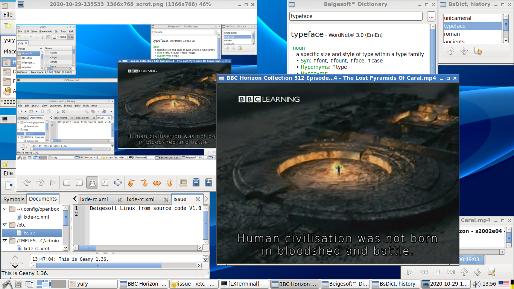

Беижсофт™ Линукс из исходных кодов (ЛИИК).
Зачем компилировать из исходных кодов?
Практически все Линукс дистрибутивы доступны в бинарном виде. Многие поставщики перестали поддерживать 32разрядные версии. Иногда после обновлений возникают проблемы. В общем первая причина - это иметь стабильный, независимый Линукс "собственного производства".
Какие методы компиляции существуют?
Первый - это компиляция для данного компьютера и операционной системы. Вы можете скомпилировать таким образом любое высокоуровневое приложение, например музыкальный проигрыватель. Для этого нужна минимальная компилирующая система. Это минимум библиотек и программ - glibc, gcc, binutils, bash... Для создания этой минимальной компилирующей системы из исходных кодов нужна кросс-компиляция.
Второй метод это кросс-компиляция. Это компилирование и инсталляция в другой корень (отличный от текущего /), компиляция возможна для отличной от текущей архитектуры, например компиляция для ARM (планшета) на обычном компьютере x86. Есть четыре стандартные переменные для этого:
- --sysroot - говорит компилятору где искать заголовки, а линковщику где искать библиотеки (где новый корень)
- DESTDIR - говорит "make" где новая корневая директория для инсталляции
- --host - говорит "configure" какая компилируемай архитектура
- --build - говорит "configure" какая компилирующая архитектура, без этой переменной "configure" будет считать что это компиляция для текущей системы а "host" лишь уточняет архитектуру, например i586-sse2
Есть также CHROOT метод, LFS использует его.
Главная проблема в том, что даже низко уровневое ПО не соблюдает стандарты кросс-компиляции методом "--sysroot". Только компиляторы правильно трактуют данную переменную, т.е. ищут заголовки в "целевом корне". Линковщик трактует "целевой корень" как "дополнительный". Компилируемое ПО может запускать только-что скомпилированные программы для самоинсталляции, то есть это не пройдет если целевой процессор другого типа. Даже с CHROOT методом происходят подобные проблемы, например "coreutils": error help2man: can't get `--help' info from man/dir.td/dir. Похоже, что проблема в спутывании текущих системных и компилируемых библиотек и настроек. Тестирование также проблемматично при кросс-компиляции для обычного компьютера. Конечно-же специализированные компилирующие системы для планшетных ОС решают данные проблемы.
Классическая компиляция для данного комьютера подразумевает что большинство ПО уже установлено. Инсталлируемое ПО часто имеет дело с другим ПО которое тоже зависит от первого (взаимо-зависимость). Даже базовая библиотека GLIBC требует SELINUX для поддержки последней (сама GLIBC никогда не будет связана линковщиком с libselinux), то есть необходима повторная инсталляция ПО с взаимо-зависимостями. Эти два факта - "повторное компилирование ввиду взаимо-зависимостей" и "проблема тестирования при кросс-компиляции" ведет к правильному пути к компиляции ЛИИК:
- кросс-компиляция всего ПО (включая компилирующее - gcc, binutils, make, ...), на этом шаге получаем сырой ЛИИК
- повторная компиляция для данного компьютера (включая тестирование и взаимо-зависимости) на загруженном сыром ЛИИК
Ввиду сложности кросс-компиляции начиная с версии 1.6 ЛИИК делается следующим способом:
- кросс-компиляция минимального ЛИИК с компилирующим ПО (gcc, binutils, make, etc.) без systemd и dbus.
- компиляция для данного компьютера фаза 1 без тестов ПО включительно по systemd и dbus на init-bash загруженном ЛИИК.
- компиляция/рекомпиляция для данного компьютера фаза 2 (включая тестирование и взаимо-зависимости) всего остального ПО на init-systemd загруженном ЛИИК.
Работа была проделана на Debian 9. Он имеет кросс-компиляторы для большинства архитектур.
Снимок экрана ЛИИК 1.8:

Исходные коды (набор bash-скриптов и инструкции): https://sourceforge.net/projects/linux-from-source-code/ (или lfsc-1.8.tar.xz)
Ссылки:
- about multi-arch/cross-compiling https://wiki.debian.org/Multiarch
- Linux From Scratch (LFS) http://www.linuxfromscratch.org
- Cross-Compiled Linux From Scratch https://trac.clfs.org/
- DIY: Build a Custom Minimal Linux Distribution from Source by Petros Koutoupis